📚 Classic Literature · English Through Storytelling · AI-Crafted Immersion Deck
A guided journey through a Gemini-crafted visual deck of Tagore’s 1916 ghost story — with flip-card vocabulary, symbol analysis, and an interactive comprehension quiz.
The quest opens in a new tab. Survive three nights, gather the mirror fragments, and discover five endings.
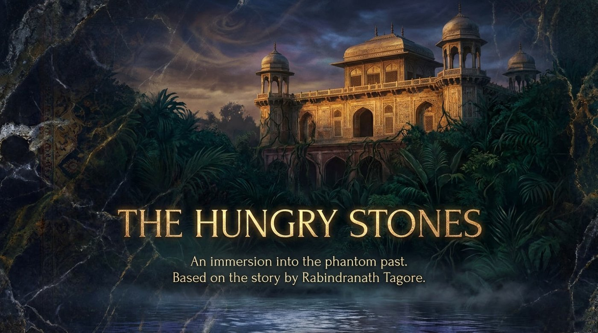
Some of the best English lessons wear the costume of a ghost story. This one arrives as a fifteen-frame visual deck titled The Hungry Stones — An Immersion into the Phantom Past, created with Gemini Notebook and based on the short story by Rabindranath Tagore, the Bengali poet who in 1913 became the first non-European writer to receive the Nobel Prize in Literature. The deck retells his 1916 tale of a cursed marble palace in polished, cinematic English, and every frame doubles as a reading passage, a vocabulary bank, and a small masterclass in atmosphere.
The educational value here is unusually dense. Each frame compresses Tagore’s long, opulent sentences into short quotable captions, and those captions model structures a learner can borrow immediately: similes, triads, contrasts, and absolute constructions. This article walks through the story frame by frame, unpacks the key vocabulary, decodes the central metaphors, and finishes with an interactive comprehension quiz. Settle in — the last train to Barich leaves shortly, and it is already late.
Chapter I · The Tale
The journey begins with a delay. “A delayed train and a sleepless night open the door to the extraordinary.” With that single caption the deck sets its contract with the reader: the ordinary schedule of the world has broken down, and something extraordinary is ready to step through the gap. Three vintage tickets then introduce the cast. The Stranger is “a man of unknown origin who discoursed upon the Vedas, Persian poetry, and secret policies with an unnerving, supernatural confidence.” The Audience is “a skeptical narrator and his theosophist kinsman, rapt with wonder, convinced of the stranger’s astral body.” The Setting is “a junction waiting room at 10 P.M. A bed rolled out on a table. A night entirely devoid of sleep.”
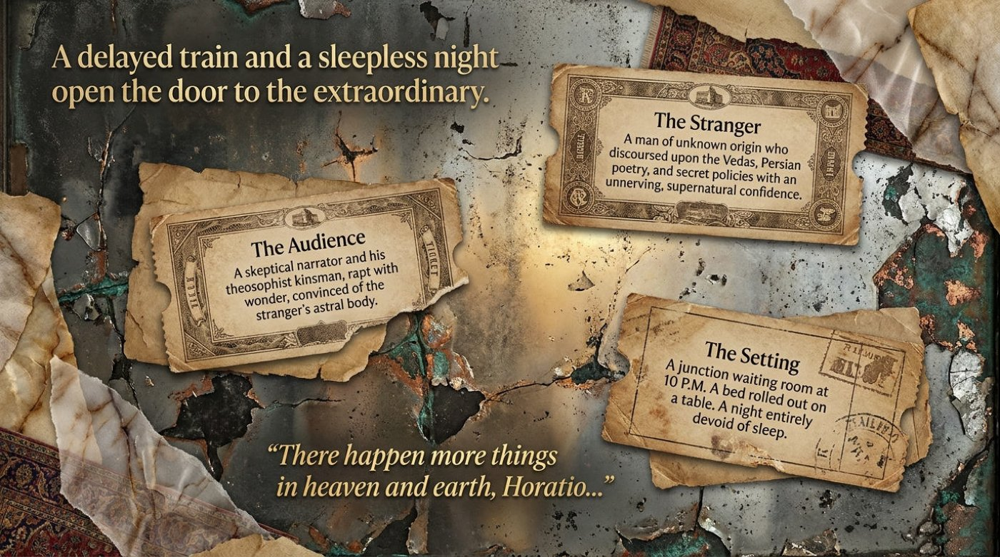
Notice the Shakespearean signature printed across the same frame: “There happen more things in heaven and earth, Horatio…” The line leans on Hamlet and announces the story’s central tension between the skeptic who demands proof and the dreamer who accepts wonders. Pay attention to how the deck frames an entire novelistic situation — time, place, cast, and theme — in four short sentences. It is a pattern worth imitating the next time you tell a story in English.
The destination of the story is Barich, a lonely junction where a marble palace waits above the river. The deck announces it like a museum plaque: “The solitary marble palace at Barich guards a forgotten century of luxury.” Four markers build the geography. The location sits “at the foot of lonely hills.” The river Susta moves “tripping and babbling over pebbles like a skilful dancing girl.” The history reaches back to “built 250 years ago by Emperor Mahmud Shah II for sheer pleasure, where Persian damsels once splashed their snow-white feet in rose-water fountains.” The present is “a vast, solitary quarter for a lonely collector of cotton duties, completely devoid of human habitation.”
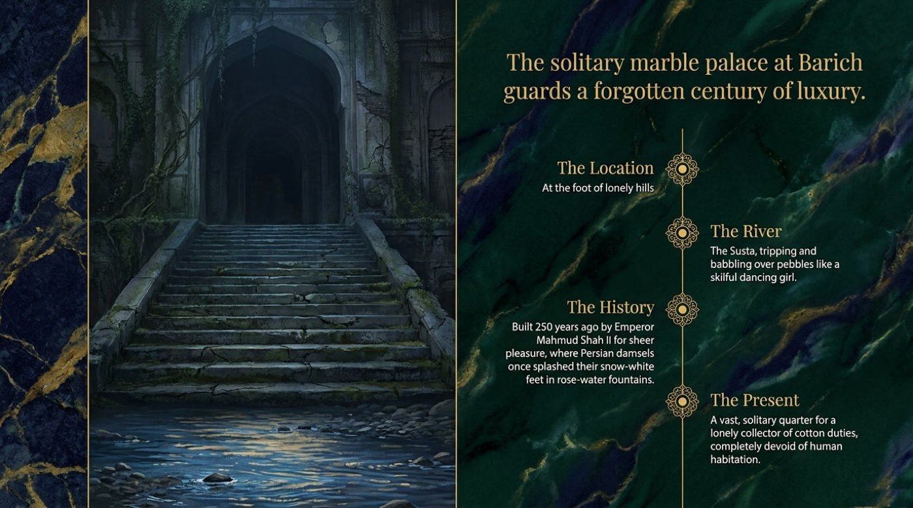
💡 The simile of the dancing girl deserves a second look. It teaches a reusable pattern — verb pair + like + image — that turns plain description into music. A kettle tripping and bubbling over the flame like an eager apprentice works just as well in a kitchen as a river works in Bengal. Collect one such simile per reading session, and within a month your descriptive English changes register completely.
Then comes the rule every haunted house needs. Karim Khan, the old clerk, delivers it in one breath: “Pass the day there, if you like, but never stay the night.” The deck strengthens the warning with social proof: “Servants flee before dark. Even thieves refuse to venture near it.” The narrator laughs it off — he “passes the warnings off with a light laugh, returning tired to sleep” — and within a week “the solitude weighs like a nightmare.” The confession that follows is the most quoted line of the whole story: “I felt as if the whole house was like a living organism slowly and imperceptibly digesting me by the action of some stupefying gastric juice.” The grammar is worth studying, because the horror lives in the adverbs: slowly and imperceptibly erase the exact moment of defeat, which is precisely what makes the image unbearable.
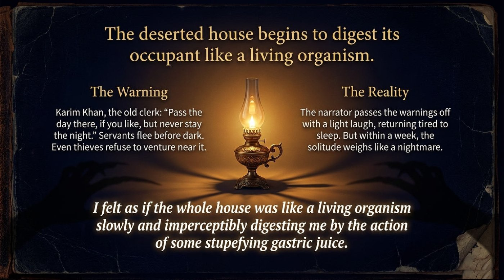
Night one arrives like theatre. “A dark curtain falls, and the invisible mirage of a 250-year-old world awakens.” The deck builds the awakening in four escalating beats. The Silence: “Not a breath of wind. An oppressive scent from spicy shrubs. The sun sinks behind the hills.” The Footfalls: “A sudden rush of many steps down the 150 stone stairs. A thrill of delight tinged with fear.” The Phantoms: “A bevy of joyous maidens, entirely invisible. Gay, mirthful laughter like the gurgle of a spring gushing forth in a hundred cascades.” The Splash: “Shallow waters stirred. The splash of arms jingling with bracelets, tossing tiny waves up in showers of pearl.” Remember the sequencing — silence, sound, presence, touch — because it is a ready-made template for describing any atmosphere, from a stadium to a first day at a new job.
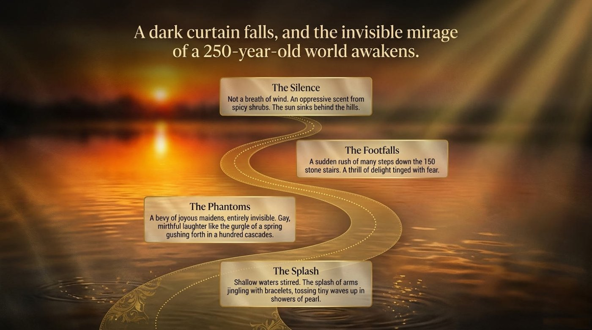
The next frame widens the senses into a full orchestra. “The groaning, desolate halls echo with an unearthly symphony of the unseen.” The scent circle holds “a faint, ancient aroma of attar and unguents lingering in the gloom.” The sound circle collects “the gurgle of splashing fountains, a strange tune on a guitar, the tinkle of anklets, tolling bells, and the song of caged bulbuls.” The atmosphere circle completes the effect: “a sudden, great bustle, as if a massive throng of people had just broken up in confusion and rushed out through the corridors.” It should be noted that the vocabulary here is deliberately exotic, and each dotted-underlined term in this article carries a one-line definition on hover or tap.
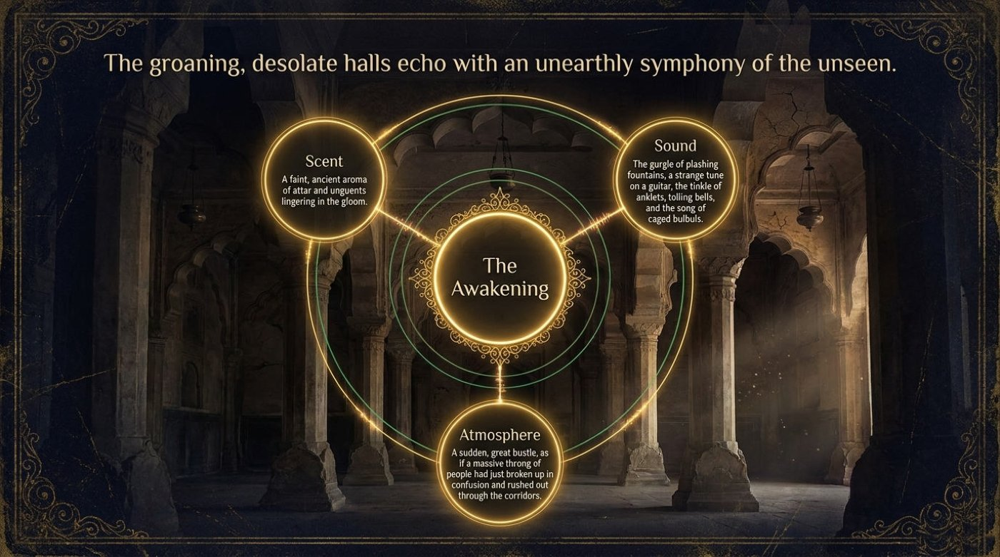
At the heart of the story stands a split identity. “A profound discord emerges between the mundane day and the intoxicated night.” By day the narrator is the Cotton Collector: “short English coat, tight breeches, sola hat,” earning “Rs. 450 per mensem examining cotton accounts for the Nizamat,” with a state of mind described as “trivial, meaningless, contemptible vanity.” By night he becomes the Bygone Personage: “red velvet cap, loose embroidered paijamas, flowing silk gown,” an “unknown prince playing a part in unwritten history, smoking a many-coiled narghileh filled with rose-water,” in a state of “eager intoxication, awaiting a strange meeting with the beloved.” The frame is a ready-made writing template — Attire, Reality, State of Mind — and it works beautifully for describing your own two selves: the office version and the midnight version.
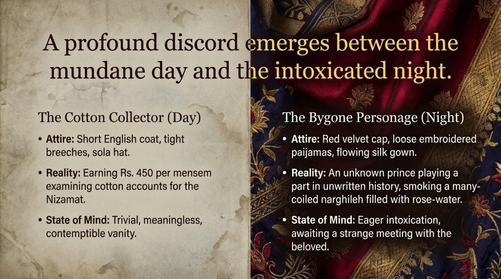
The dream then grows a full geography. “The architecture of the dream leads deep into the slumbering heart of Baghdad.” Four stations structure the descent. The guide is “a beckoning, invisible Arab girl with marble-smooth arms and a curved dagger.” The corridors run “wending through endless dark alleys, solemn audience-chambers, and close secret cells.” The guard is “a terrible negro eunuch with a naked sword, dozing at the foot of a deep blue screen.” The inner chamber glows with “an orange-velvet Persian carpet, crystal trays of fruit, a gold-tinted decanter, and overpoweringly intoxicating incense.” The key point is that Tagore deliberately borrows the vocabulary of the Arabian Nights; the deck keeps those loan-words intact, and they make excellent vocabulary trophies for advanced learners.
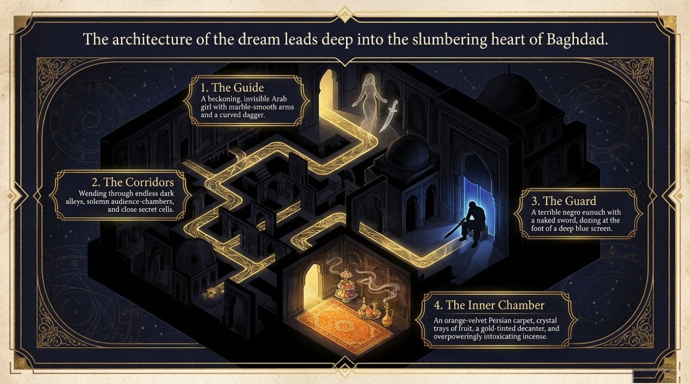
Then the centerpiece of the vision. “The phantom reflection reveals a dazzling flash of ecstasy and pain.” Three fragments assemble her: “a swift turn of the neck and a golden frill falling on a snowy brow,” “a close-fitting bodice wrought with gold,” and “intense passion and pain glowing in large dark eyes.” The caption then dissolves her in a single breath: “A dazzling flash of pain and craving and ecstasy, a smile and a glance and a blaze of jewels and silk, and she melted away.” Notice the triads — pain and craving and ecstasy; a smile and a glance and a blaze — rhythm is doing half the storytelling here, and reading the sentence aloud makes the lesson land.
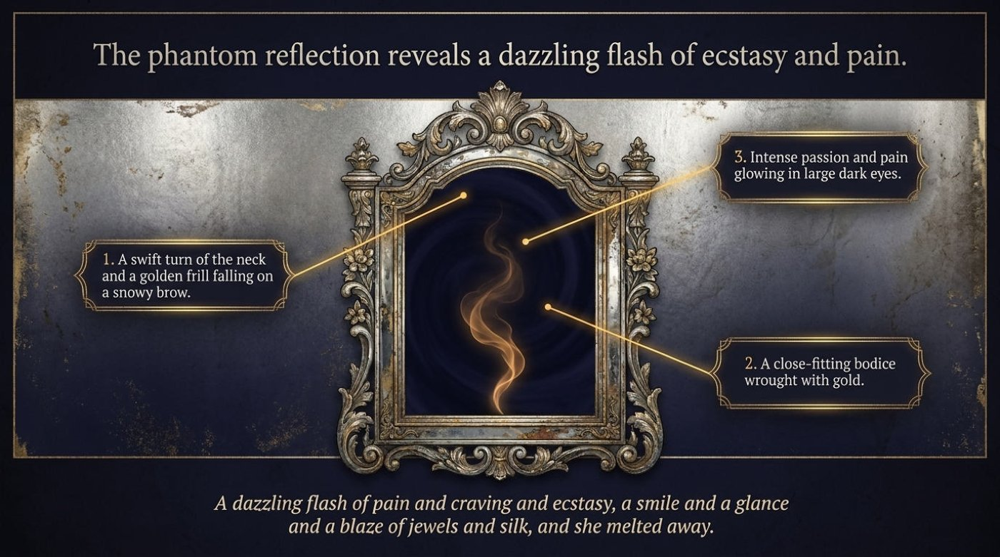
The vision turns from beauty to desperation, and the stones themselves seem to speak. “Oh, rescue me! Break through these doors of hard illusion, deathlike slumber and fruitless dreams… and take me to the warm radiance of your sunny rooms above!” The deck reconstructs her biography in three crushing steps: “snatched from a desert mother by a Bedouin,” “sold in the slave-market for gold to the Badshah’s officer,” and finally “swept away by the blood-stained, dazzling ocean of grandeur and the rocks of royal intrigue.” A whole tragic life in three sentences — study this compression, because it transfers directly into essays, interviews, and presentations.
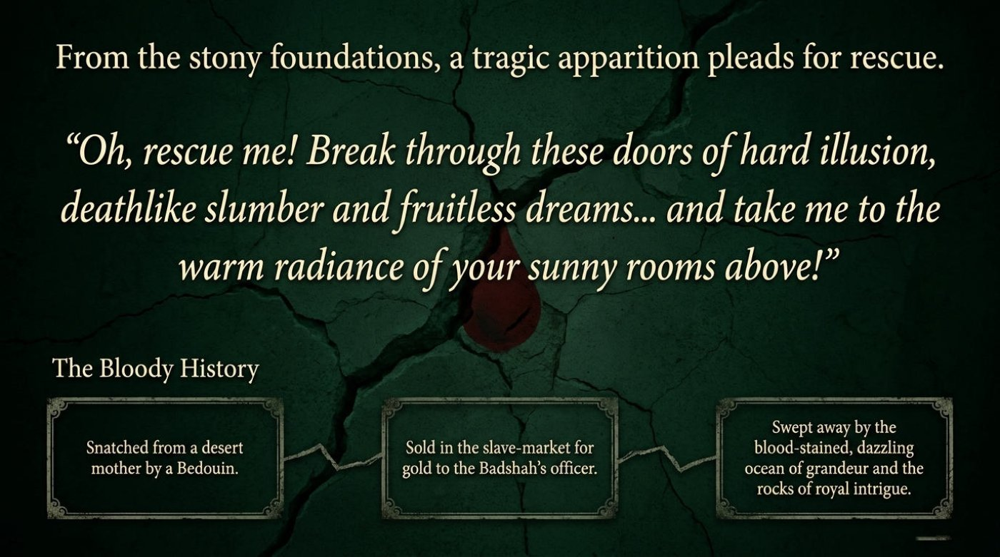
Reality then intrudes with a shout. “The crescent moon and the madman’s cry shatter the Arabian nights.” The caption explains the figure: “The moon looks pale like a weary sleepless patient. Outside, crazy Meher Ali, who escaped the palace at the cost of his reason, cries out his daily custom.” The frame’s background smears the night sky with chalk-green capitals: “STAND BACK!! ALL IS FALSE!!” The madman is the story’s truth-teller, and his two-word sermon — all is false — will return at the very end with the force of a verdict.
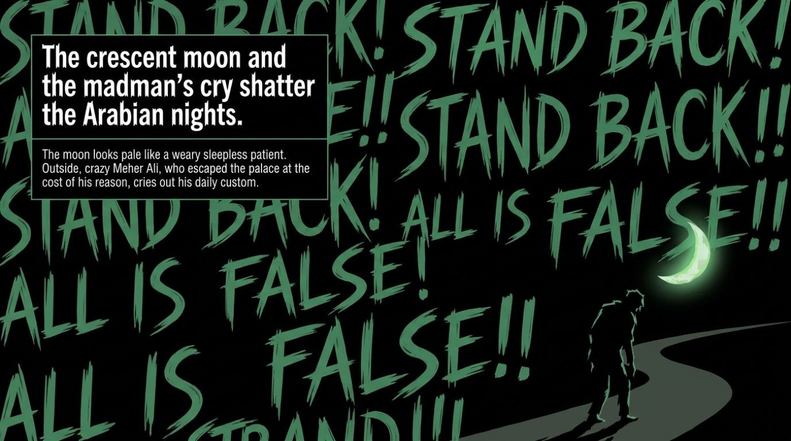
Guilt brings the narrator back. “A wild tempest mirrors the violent grief trapped within the palace.” The return: “Driven by contrition, the narrator is drawn back to the sullen, dark rooms at twilight.” The tempest: “The sky shivers. A wild blast rushes howling through the distant pathless woods, showing its lightning-teeth like a raving maniac.” The agony: “In the dense gloom, a woman lies on the carpet, tearing her dishevelled hair. Blood trickles down her brow as she bursts into wringing sobs while the rain pours in torrents.” Weather students take note: the deck performs a textbook pathetic fallacy, letting a storm carry the emotions the characters cannot say aloud.
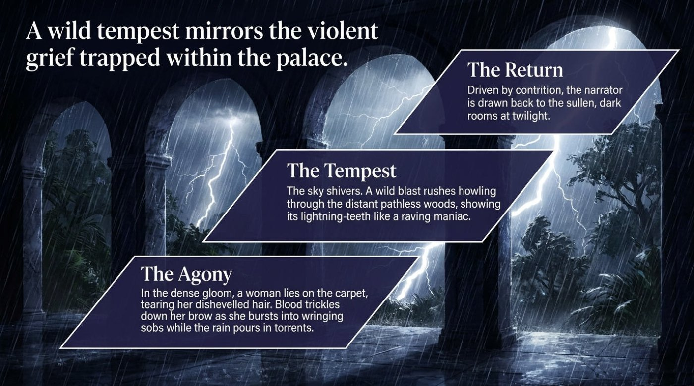
Now the title decodes itself. “The curse of blasted hopes leaves the stones famished for the living.” The cause: “countless unrequited passions and lurid flames of wild blazing pleasure raged within the pleasure-dome.” The curse: “the collected heart-aches made every stone thirsty and hungry, eager to swallow up any living man like a famished ogress.” The cost: “no one survives three consecutive nights without losing their life — or, like Meher Ali, losing their reason.” This is the thesis of the whole piece: luxury built on stolen lives does not merely decay — it hungers.
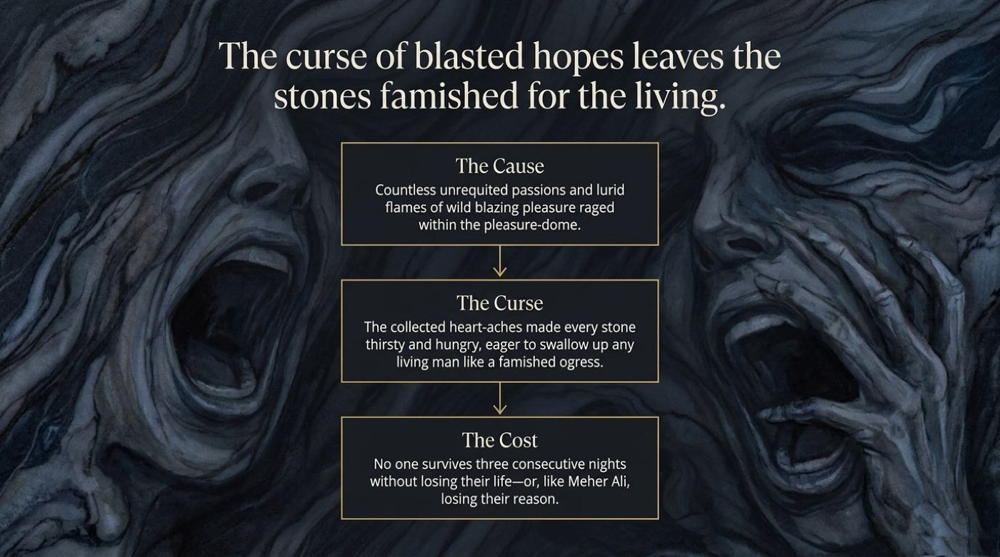
And then Tagore does something almost cruel. “An abrupt departure severs the tale, leaving only a lifelong rupture in its wake.” The interruption: “an English gentleman calls out ‘Hallo!’ to the storyteller from a first-class carriage.” The skeptic: “the narrator declares the man took them for fools, deeming the story a pure fabrication from start to finish.” The severance: “the storyteller boards first-class. The protagonist and his kinsman are left in second-class, the end of the Persian girl’s history forever lost.” The believer: “the theosophist kinsman defends the tale. A lifelong rupture ensues between the two travelers.” The story ends without an ending on purpose, and the deck’s final frame turns the interruption into a philosophy of fascination and loss.
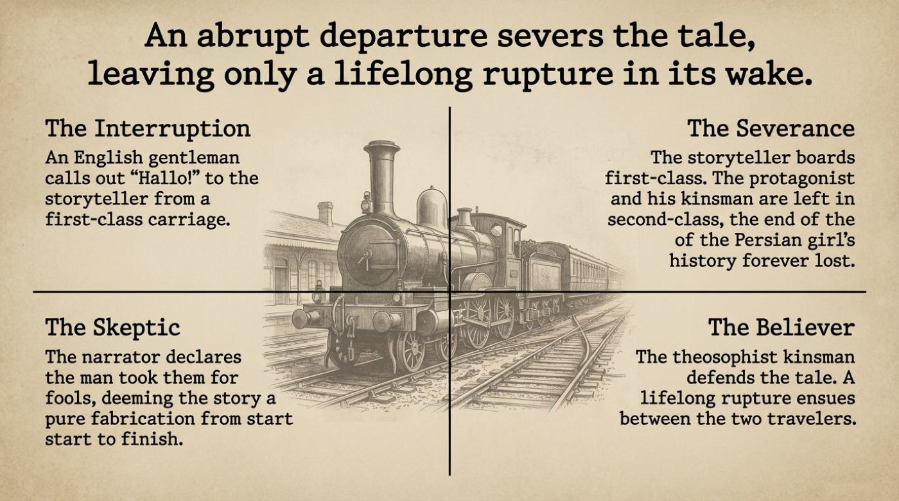
Chapter II · Language
The deck’s language is a treasure chest precisely because it mixes registers: colonial office vocabulary (mensem, cotton accounts), Mughal luxury words (narghileh, paijamas, attar), and pure Gothic horror (stupefying, gastric juice). The six key terms below carry the emotional skeleton of the story. Each entry gives the literal meaning, the figurative and contextual meaning, a direct quote from the material, and the way the deck itself deploys the word. 📌 Notice how the sequence mirrors the plot: wonder first, then emptiness, then numbing, then remorse, then a permanent break.
Literal meaning. Rapt shares its root with rapture and means “carried away, transported out of oneself.” The full phrase describes a person lifted entirely out of ordinary attention.
Figurative / contextual meaning. Spellbound fascination — the state in which skepticism quietly switches off.
Example from the material. “A skeptical narrator and his theosophist kinsman, rapt with wonder, convinced of the stranger’s astral body.” The phrase marks the exact moment one listener stops doubting the storyteller and starts believing in astral travel.
How the material explains it. The frame builds one sentence that holds both poles of the story — a “skeptical narrator” and a kinsman “rapt with wonder” — demonstrating that fascination and doubt can sit side by side in a single waiting room. It is a compact lesson in contrastive description.
Literal meaning. Completely lacking something; totally empty of it. Devoid descends from Old French and Latin roots meaning “to empty out.”
Figurative / contextual meaning. Not merely quiet or empty-looking — stripped of the very category of the thing.
Example from the material. “A vast, solitary quarter for a lonely collector of cotton duties, completely devoid of human habitation.”
How the material explains it. The caption stacks three near-synonyms of loneliness — vast, solitary, lonely — and then closes the door with “completely devoid of human habitation,” upgrading the mood from quiet to absolutely lifeless. Stacking synonyms before a definitive phrase is a technique worth copying.
Literal meaning. In a manner too slight, slow, or subtle for the senses to register — literally “not graspable by perception.”
Figurative / contextual meaning. Danger without a threshold: no single moment when the house takes over, because it happens below the level of noticing.
Example from the material. “…a living organism slowly and imperceptibly digesting me by the action of some stupefying gastric juice.”
How the material explains it. The deck welds imperceptibly to slowly, doubling the sense of a process no eye can catch. The pairing shows learners how adverb choice can carry the emotional weight of an entire paragraph.
Literal meaning. Making a person numb, dazed, or unable to think clearly; from Latin stupeficus, “numbing.”
Figurative / contextual meaning. The house first drugs its guest, then digests him — the adjective names the anaesthetic stage of the process.
Example from the material. “…by the action of some stupefying gastric juice.”
How the material explains it. The frame reaches into medical Latin and plants it inside gothic scenery, and the register clash produces the shiver. One clinical adjective amid ghost-story imagery generates more fear than any amount of shouting — a stylistic lesson in itself.
Literal meaning. Deep, grinding remorse for something one has done; from Latin contritus, “ground to pieces.”
Figurative / contextual meaning. Guilt as a physical engine — something that pulls a person back to the very place he fled.
Example from the material. “Driven by contrition, the narrator is drawn back to the sullen, dark rooms at twilight.”
How the material explains it. The caption compresses a whole motivation into one participle: driven. Contrition is not described — it is shown as a force with direction. The frame demonstrates how a single abstract noun, given a verb of motion, becomes narrative.
Literal meaning. A break or tear in something that was whole; from Latin ruptura.
Figurative / contextual meaning. A friendship split along the line of belief versus doubt — and the split never heals.
Example from the material. “A lifelong rupture ensues between the two travelers.”
How the material explains it. The final frame crowns the story with it: “An abrupt departure severs the tale, leaving only a lifelong rupture in its wake.” The verbs severs and rupture echo each other deliberately, so the language itself performs the cutting. Vocabulary and theme close together in a single knot.
🔁 Drill the words with the cards below. The front shows the term, its part of speech, and a hook; the back unfolds the literal meaning, the contextual meaning, a direct quote, and a note on why the word matters. Keyboard users can tab to each card and press Enter or Space to flip it.
Chapter III · Symbols
A deck this atmospheric is really a machine for producing metaphors, and four of them deserve unpacking. Each one is quoted directly from the material and then translated into plain significance.
“I felt as if the whole house was like a living organism slowly and imperceptibly digesting me by the action of some stupefying gastric juice.”
The metaphor converts slow psychological capture into body horror. The tenant is not frightened out of the palace — he is absorbed by it, and the process is too gradual to resist. There is also a historical sting: a modern colonial clerk living off the leftovers of imperial luxury is himself being consumed by a system older and larger than he is. For writers, the lesson is transfer: take an abstraction (loneliness) and give it a bodily function (digestion), and the reader feels it in the stomach rather than merely understands it.
“The collected heart-aches made every stone thirsty and hungry, eager to swallow up any living man like a famished ogress.”
This is the title symbol, and the deck presents it as a strict chain: the cause is “countless unrequited passions and lurid flames of wild blazing pleasure”; the curse is the stones’ collected hunger; the cost is that “no one survives three consecutive nights without losing their life — or, like Meher Ali, losing their reason.” The significance is that emotion, in this story, is stored in matter. Pleasure leaves residue. A palace built on stolen lives becomes predatory architecture, and the marble itself turns predator. The image explains why the palace is not merely haunted — it is fed.
“Like a bird flying fascinated about the jaws of a snake… All is false.”
Meher Ali’s cry reframes the entire story. The palace is a mirage, but a mirage with teeth, and the deck labels the theme directly: “The inescapability of the mirage.” The bird image explains the mechanism of the trap — the narrator is not bound or imprisoned; he is fascinated, circling the danger the way the bird circles the snake. The symbol also protects the story from a naive reading, because the madman’s verdict arrives exactly when the dream is most beautiful, reminding the audience that enchantment and deception share an address.
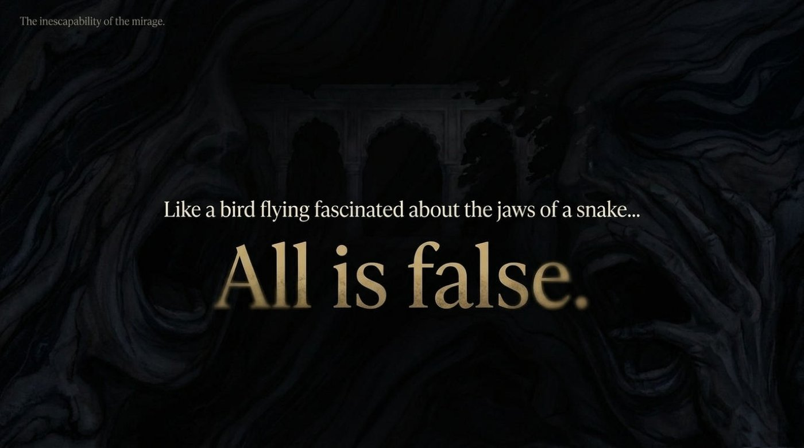
“A profound discord emerges between the mundane day and the intoxicated night.”
The day/night split is the story’s psychological engine. The deck sets the two identities side by side with surgical symmetry — “short English coat, tight breeches, sola hat” against “red velvet cap, loose embroidered paijamas, flowing silk gown” — and measures each man by the same three dimensions: attire, reality, and state of mind. The symbol deepens the theme of colonial identity: the clerk who counts cotton by day becomes a prince of an unwritten history by night, and neither self can survive the other. For language learners, the frame doubles as a contrast-paragraph template that works for any inner conflict, from student-versus-professional to home-culture-versus-target-culture.
Chapter IV · The Trial
The palace rewards attention, and the following eight questions check how much of it stayed with you. Every answer locks in instantly: correct choices glow green, wrong ones flash red with a short shake, and a concise explanation appears beneath the question. The score counter and the row of progress dots track the journey, and a final panel sums up the night. Take the quiz honestly — the stones are watching.
Coda · The Last Lamp
The most moving sentence in the material belongs to the phantom herself: “Oh, rescue me! Break through these doors of hard illusion, deathlike slumber and fruitless dreams… and take me to the warm radiance of your sunny rooms above!” Read as a learner, the plea feels oddly familiar: it is the wish of anyone who has understood a language passively for years and longs to break into active, sunlit speech. The deck’s final image — “Like a bird flying fascinated about the jaws of a snake… All is false” — supplies the safety instruction: fascination is powerful, and a little disciplined distance keeps it nourishing rather than dangerous.
📌 The main takeaway is simple. Immersive stories — especially AI-crafted retellings of classics — are among the most efficient vocabulary machines ever built, because every new word arrives attached to a shiver. The path forward: open the original deck, reread the story slowly, replay the flip-cards until the six terms feel like old friends, retell the tale aloud in your own English, and only then step back into the palace for a second night. The stones will still be hungry. A prepared reader, however, always leaves with more than they brought.
The original presentation deck, exactly as used for this article: